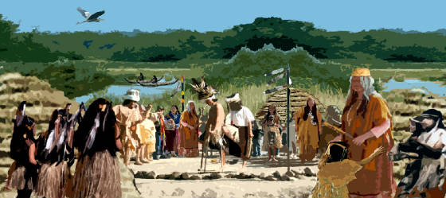
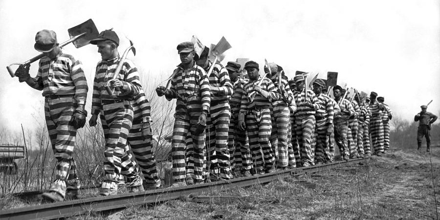
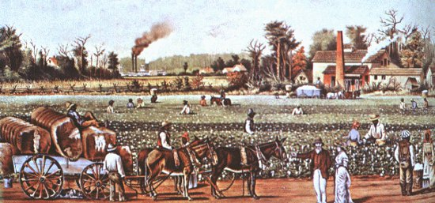
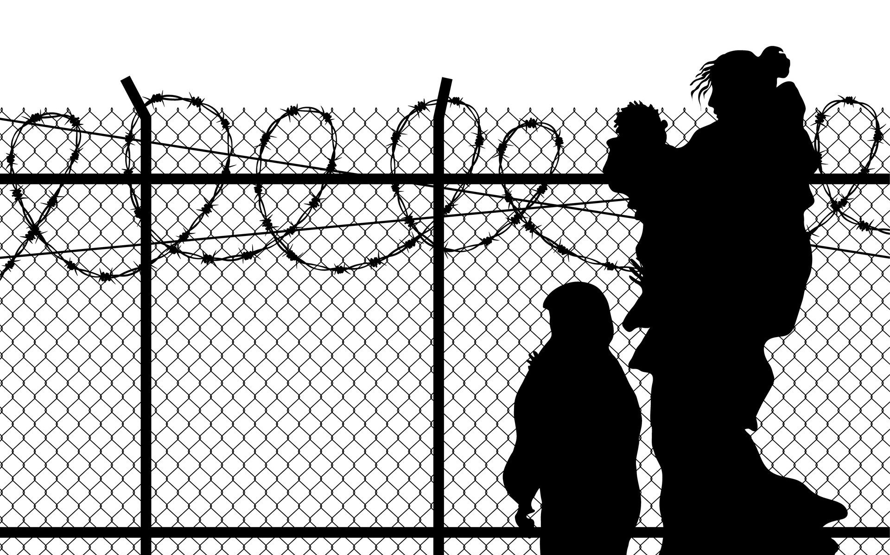

A small timeline of incarceration, with a focus in Los Angeles
1760
Spanish Colonialism: 1769

The spanish crown wishes to establish a permanent settlement in Alta
California. However, the land is heavily populated with the indiginous
native american tribes and there is much resistance.
Methods Used to gain control of land:
Conversion and integration of Natives
Taking the land by means of Conquest
Trading for land
Those that resisted were either killed in war, or jailed.
1770
4th Spanish Mission, San Gabriel Arcángel, Established: 1771
1780
Los Angeles Colonists Settle: 1781
1790
1800
1810
War for Mexican Independence: 1810-1821
1820
1830
1830
1840
Mexican American War: 1846-1848
Los Angeles War On Gangs Began: 1848
1850
California Gold Rush: 1850s-1860s
Act for the Government and Protection of Indians: 1850

One of the first laws passed by the newly formed California state legislature.
It allowed Native Americans to be subjected to any vagrency charges
based "on the complaint of any reasonable citizen".
Many Indians were incarcerated as a result and were often found
working on the county chain gang.
1860
American Civil War: 1861-1865
1870
U.S. Tramp Era: 1870s-1910s
Chinese Massacre: 1871
California Anit-Vagrancy Act: 1872
Southern Redemption: 1877

A movement to return the U.S. south back to its pre-civil war system of labor.
Several state and local laws were passed that could accomplish this:
Contract-Enforcement Laws: workers cannot break a labor contract.
Vagrancy Laws
Convict-Lease System: private parties can buy prisoner labor.
1880
Data on LAPD Arrests: 1887-1906
Jim Crow South: 1880s
1890
Geary Act: 1892

A pivotal moment when the U.S. handled immigration, crime/punishment at a national level rather than state.
It allowed the denial of entry into the U.S. for Chinese laborers, and those who would be convicted of public crimes (prostitution, convicts.).. also including “idiots” and “lunatics”.
Unregistered peoples in U.S. led to incarceration and deportation.
Already established peoples, we’re subjected to forced removal if they did not apply for a certificate of residence.
Fong Yue Ting v. United States: 1893
Data on LAPD Arrests: 1894-1906
Wong Wing v. United States: 1896 "Not Imprisonment in a legal sense"
Plessy v. Ferguson: 1896
1900
1910
1920
Central Avenue, Black L.A. refered as the "Harlem of the West": 1922
Data on Mexican Arrests by LAPD: 1928-1939
Death of Samuel Faulkner: 1927
Thought of as the tipping point of a series of violent police killings
in Black Los Angeles. This event triggered a massive community response
that challenged policing practices.
NAACP and Black L.A. Fight Against Jim Crow Practices and Win: 1927
1930
NAACP and Black L.A. Fight Against Discrimination in Public Pools and Win: 1931
Data on Immigration Offenders: 1931-1936
1940
1950
United States Chraged With Genocide In A Paper Writen By The Civil Rights Congress: 1951